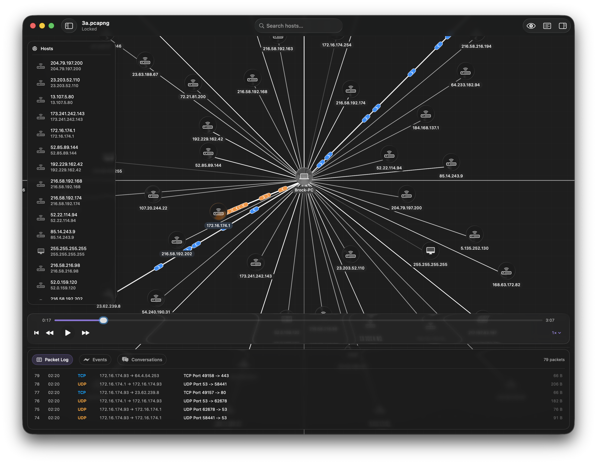
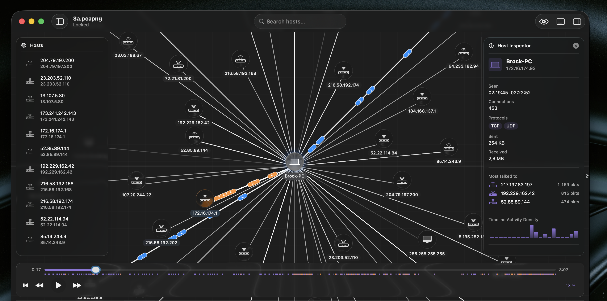
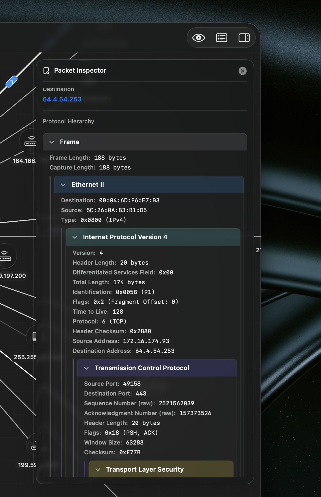
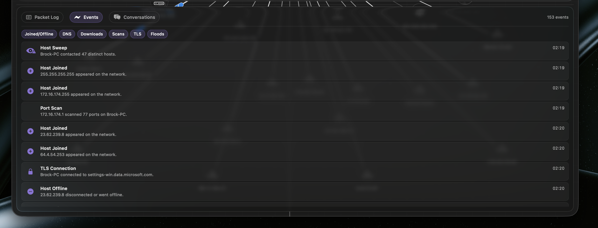
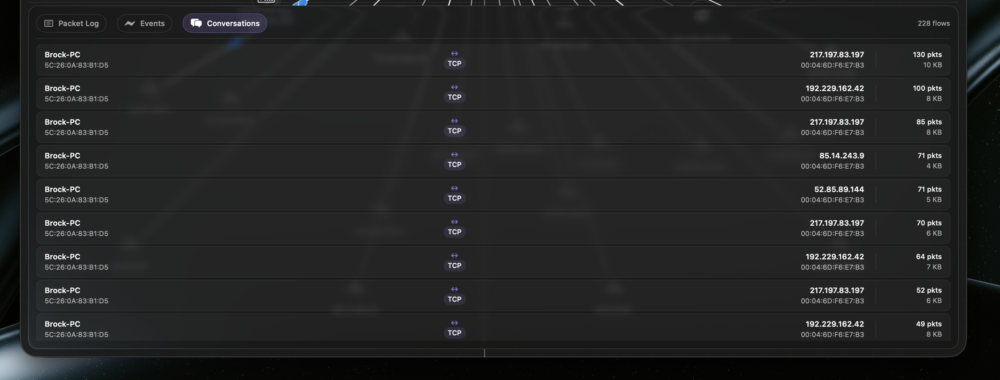

01
Open a capture
Load .pcap or .pcapng files from the Welcome window, Finder, or the standard
macOS Open flow. Netvis parses Ethernet IPv4 traffic locally and builds the first topology automatically.
Open a PCAP or PCAPNG file and watch hosts, conversations, packets, and suspicious events unfold on an interactive timeline. No terminal required.
7-day free trial - $9.99 lifetime license - built for saved capture files
From capture to clarity
Netvis keeps the raw details available, but starts with the mental model people actually need: who is talking, when traffic happens, what protocol is involved, and which moments deserve attention.
Load .pcap or .pcapng files from the Welcome window, Finder, or the standard
macOS Open flow. Netvis parses Ethernet IPv4 traffic locally and builds the first topology automatically.
Hosts appear as draggable nodes, connections become edges, and packets animate through the graph as the timeline plays. Scrub, pause, jump, and inspect the capture as a sequence of events.
Select hosts, packets, conversations, or detected events to reveal protocol layers, endpoint details, payload hex, host activity, and the surrounding network context.



Core capabilities
Netvis is designed for students, beginners, and network practitioners who need to move from raw packets to a clear story without giving up detail.
Hosts are discovered from capture data, grouped into conversations, and arranged around the most connected node. Rename devices, tag their type, drag them into place, and search by IP, MAC, name, or manufacturer.
Scrub across the capture, step backward or forward, change speed, and show only hosts active around the current moment. Packet motion gives timing and direction an immediate visual shape.
Inspect frame metadata, Ethernet, IPv4, TCP, UDP, ICMP, ARP, DNS, DHCP, HTTP, TLS, endpoints, and payload hex in a readable hierarchy.
Netvis enriches hosts with DHCP names, mDNS .local names, MAC OUI hints, byte totals, top
peers, protocol summaries, and an activity sparkline.
Filter hosts, focus active traffic, jump from events to involved nodes, and highlight conversations so the important path stays visible.
Security-relevant events
After import, Netvis scans the full capture and builds a chronological event list. Click an event to pause playback, jump to that timestamp, highlight the involved hosts, and center the graph on the relevant traffic.
Detect one host connecting to many ports on a single peer.
Surface dense bursts of DNS queries from one source.
Flag high inbound byte volume within a short window.
Extract TLS Client Hello and SNI details where available.
Native and local
Netvis is a document-based macOS app built for local capture files. It reads user-selected files and does not require elevated permissions or shell workflows.
Secure by design. Netvis uses read-only access to user-selected capture files and keeps license state in local storage.
Native macOS interface. Floating panels, resizable inspectors, timeline controls, and host drawers are built around a focused graphical workflow.
Made for saved captures. Netvis analyzes PCAP and PCAPNG files. It is not a live packet capture tool.


Questions
Netvis supports classic .pcap files and .pcapng files. It focuses on Ethernet
IPv4 traffic with TCP and UDP parsing, plus selected application-layer enrichment.
It is a different kind of tool. Netvis is built for visual explanation, teaching, replay, topology, and guided inspection. Raw protocol detail is still available when you need to drill down.
No. Netvis analyzes saved capture files. This avoids requiring elevated permissions or packet capture extensions.
Netvis includes a 7-day free trial with a one-time $9.99 lifetime license for continued use.
Use Netvis when a packet list is too dense, a diagram would explain the capture faster, or you need to teach what actually moved across a network.